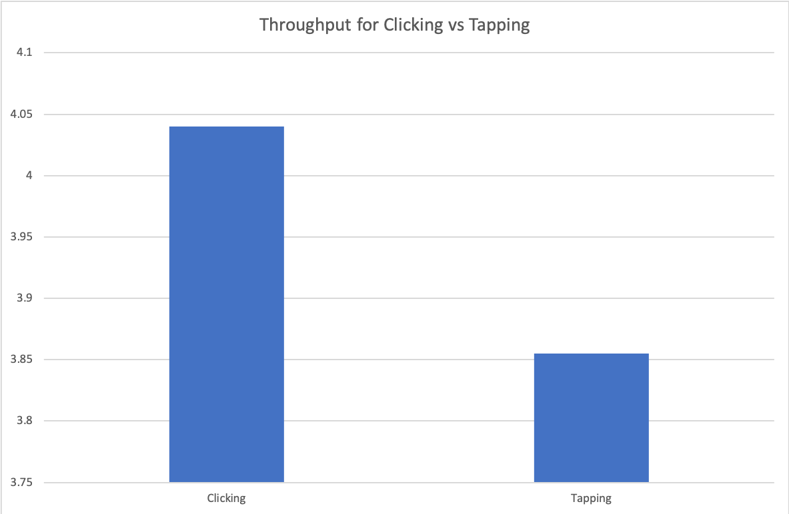

Fitts' Law Testing Report
Author: Luke Lyon
2/5/2019
Summary
I tested two conditions: clicking targets on a trackpad or tapping targets on a trackpad. Two participants trialed each condition, with each trial alternating the starting condition.
Each trial had five targets with amplitudes of 100, 200, and 400, and target wdiths of 20, 40, and 80 pixels.
Each trial condition was tested twice. The tapping trials resulted in an average throughput of 3.855 bits/second, and the clicking trials had an average throughput of 4.04 bits/second. The results are shown in the bar chart below.
The results suggest higher throughput when clicking a target compared to tapping on a target. These are limited results, but could be explained by a reduction in movement required to click on a trackpad compared to lifting your finger and pressing down to tap a trackpad.